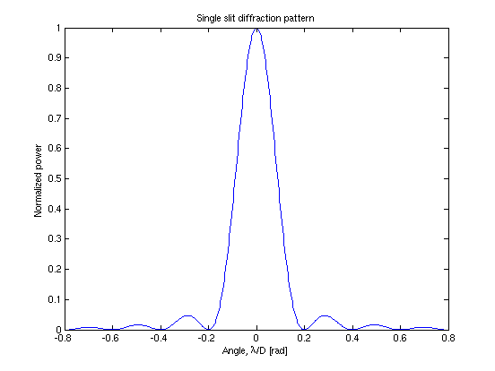
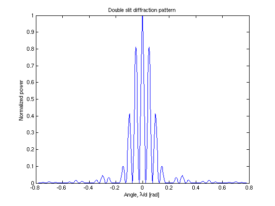
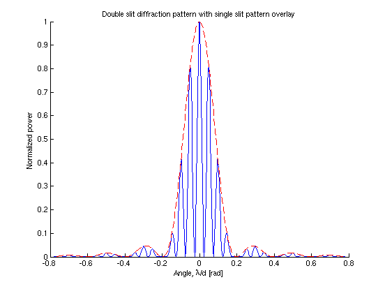
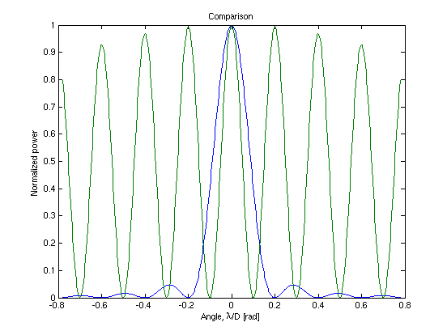

Script compares single- and double-slit diffraction patterns
Script in slitDiffraction.m
AH 2010.2.2
Contents
Define geometry and wavelength
D = 1; % slit width, in some units d = 4; % distance between slits, in the same units lambda = 0.2; % wavelength, in the same units
Single slit case
First make a function P_s that relates the power pattern to far-field angle, slit width, and wavelength:
P_s = @(theta, D, lambda) (sinc(theta.*D./lambda)).^2; % Operators .*, ./, and .^ so variables can be vectors % Note that the MATLAB sinc function is sinc(x) = sinc(pi*x)/(pi*x) % (this scaling is useful in sampling theory) % make a vector of data for angle, then evaluate the function at those points lims = 0.78; theta = linspace(-lims, lims, 501); y_s = P_s(theta, D, lambda); % then plot clf; plot(theta, y_s) xlabel('Angle, \lambda/D [rad]') ylabel('Normalized power') title('Single slit diffraction pattern')
Double slit case
Define a function P_d that relates the power pattern to the far-field angle, slit width, and wavelength
P_d = @(theta, d, D, lambda) (cos(pi.*theta.*d./lambda).*... sinc(theta.*D./lambda)).^2; % .*, ./, and .^ so variables can be vectors % Note that the MATLAB sinc function is sinc(x) = sinc(pi*x)/(pi*x) % using angles from above, make a vector of function values y_d = P_d(theta, d, D, lambda); % then plot clf; plot(theta, y_d) xlabel('Angle, \lambda/d [rad]') ylabel('Normalized power') title('Double slit diffraction pattern')
Double slit case with component parts
clf; hold on plot(theta, y_d, 'b') plot(theta, y_s, 'r--') xlabel('Angle, \lambda/d [rad]') ylabel('Normalized power') title('Double slit diffraction pattern with single slit pattern overlay') hold off
Compare the patterns from a single slit and two slits
Make a single slit with width D and a pair of slits separated by D with widths a few percent of the separation:
% plot at previous scale y_s = P_s(theta, D, lambda); y_d = P_d(theta, D, 0.05*D, lambda); % clf; plot(theta, y_s, theta, y_d) xlabel('Angle, \lambda/D [rad]') ylabel('Normalized power') title('Comparison')
Question
Why is the single-slit pattern peak wider than the double-slit peak?